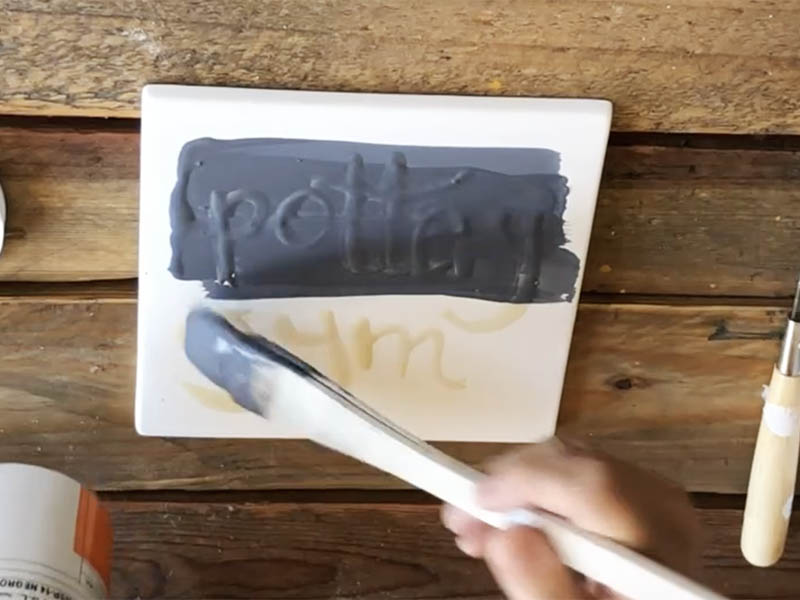
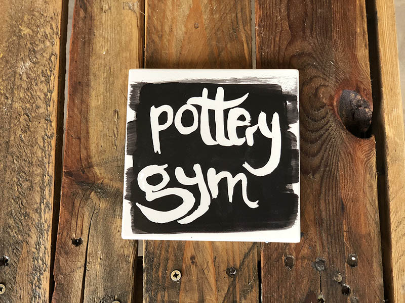
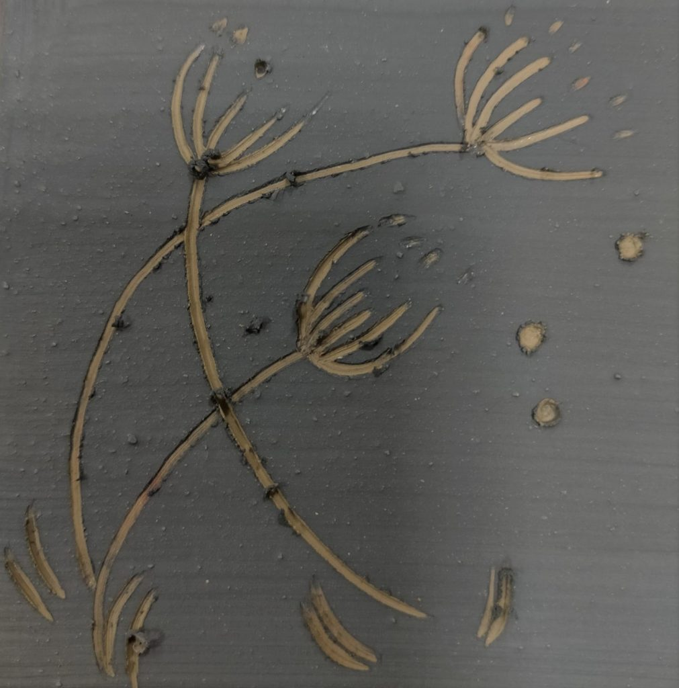
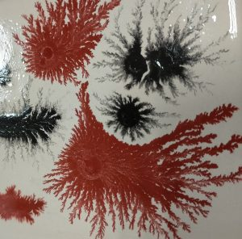

Los engobes son por definición una cubierta arcillosa que se aplica en un medio acuoso sobre la pasta fresca, en estado cuero. Tienen por objetos darle al cuerpo cerámico una cubierta decorativa a través de diversas técnicas. Pueden ser arcillas naturales o mezcla de ellas. La elección del barro para el engobe tiene una gran importancia, ya que el encongimiento del engobe debe ser casi idéntico al de la pasta empleada; de lo contrario se despegará o se escamará al secarse.
Aplicación: La fase en la que se aplica el engobe a la superficie de una pieza es de gran importancia, debiendo tener la dureza de cuero. En ese estado podrá ser manejada con mayor facilidad sin riesgos de perder la forma, a la vez debe contar con suficiente humedad para absorber el engobe lentamente.
Los engobes tienen la particularidad de cubrir total o parcialmente la superficie sobre la cual se aplican brindando una amplia gama de posibilidades decorativas
Entre las técnicas decorativas más empleadas podemos mencionar la siguientes:
Reserva con látex y papel: Consiste en cubrir la parte de la pieza que no queremos engobar o hacer un diseño donde se visualice el color de abajo para luego superponer otro.
Para su aplicación se recorta el papel con el diseño deseado y luego se adhiere a la superficie de la pieza, posteriormente se procede a engobar. Cuando el engobe está seco se retira con cuidado.Lo mismo ocurre con el látex, el cual actúa como una película elástica adherida a la pieza, luego se engoba y se retira fácilmente pinchando con un punzón.
 Esgrafiado: Consiste en hacer un dibujo sobre la pieza engobada en estado cuero o seca, raspando el engobe con una herramienta con punta no muy agresiva, de esta modo quedará el diseño del color de la pasta soporte
Superposición:En esta técnica se superponen distintos colores de engobes, Podemos mencionar dos variantes: del color más claro al más oscuro, o viceversa para lograr transparencias
Marmolado:Se baña una pieza cóncava, plana o chata, cuando el baño está aún húmedo se colocan con perita manchas y trazos de dos o tres colores diferentes. Se mueve la pieza en círculo para que corran unos sobre otros generando el efecto mamolado
Moca:Para realizar esta técnica es necesario preparar un té de moca, hirviendo 25 grs de tabaco cortado en 1/2 litro de agua, a fuego lento y destapado, durante 40-45 minutos. Luego se filtra y se colorea con óxidos(Fe, Co, Cu,Mn). Ayuda a su reaccción adicionar unas gotas de vinagre.
